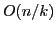
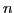
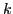

In this work we propose solving huge-scale instances of the truss topology design problem with coordinate descent methods. We develop four efficient codes: serial and parallel implementations of randomized and greedy rules for the selection of the variable (potential bar) to be updated in the next iteration. Both serial methods enjoy an

iteration complexity guarantee, where
is the number of potential bars and
the iteration counter. Our parallel implementations, written in CUDA and running on a graphical processing unit (GPU), are capable of speedups of up to two orders of magnitude when compared to their serial counterparts. Numerical experiments were performed on instances with up to 30 million potential bars.